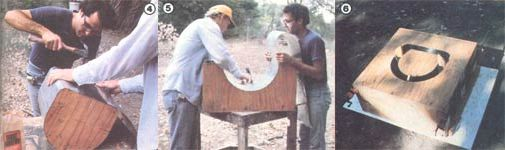

Build Your Own (90% Efficient) Fireplace
Build a woodstove out of mud-cast bricks using a plywood frame and sheetmetal stove pipe.
By David Gustadson
November/December 1980
The "rebirth" of wood heat has been a real education for a good many people who grew up thinking that winter warmth is created by a turn of the thermostat. Not only has the growing popularity of fireplaces and woodstoves forced a number of folks to put a time-and-sweat - rather than a dollars-and- cents - price tag on their fuel, but it's also stirred up the curiosity of a few individuals regarding the actual levels of performance that can be expected from the "new" appliances.
INCREASED EFFICIENCY
Surprisingly enough, the folks who have looked into such matters have found that the efficiency of the woodburners (calculated by measuring the amount of heat vented into the atmosphere, subtracting that figure from the total number of BTU available in the given weight and kind of wood used, and converting the result to a percentage) can range anywhere from near zero (with a poorly designed fireplace) to a high of perhaps 72% (in a good airtight stove).
Not long ago, in an effort to learn why some heaters work better than others - and with the eventual goal of building an effective, affordable woodburning device - New Mexicans Bob Christensen and Alex Sanchez began to research various stove designs. The pair initially concentrated on modifying the basic shape and configuration of the "standard" firebox ... but when they discovered that plate steel couldn't be easily conformed to the pattern they wanted, the inventive Southwesterners decided to try a different tack.
Coincidentally, the New Mexico Energy Institute at the University of New Mexico (an Albuquerque-based research organization dedicated to the promotion of alternative energy) was conducting a workshop project on so-called "Russian fireplaces" . . . devices which were testing out at 90% efficiency! The excellent performance of these unusual heaters stems from two characteristics: They contain enough masonry to provide a massive heat sink, and the interior flue path of each unit is arranged in a serpentine pattern so that hot waste gas has plenty of time to transfer its thermal energy into the walls of the stove. Unfortunately, the typical Russian fireplace weighs about 11 tons, stands seven feet tall, and can cost as much as $2,000 if built by a professional mason.
A TEMPEST IN A TEACUP
Nevertheless, using information they'd gleaned from the university's seminars - with the aim of remedying the disadvantages of the design - Christensen and Sanchez designed and built a five-piece, cast-clay firebox that weighed only 280 pounds, cost them $244 in new materials, and took up an easy-to-live-with 18" X 18" X 27" space on the living room floor. Best of all, when the two tinkerers conducted performance tests on their compact creation, they found its efficiency to be virtually equal to that of the "Bolshevik behemoths". (In all fairness, we should point out that, although the efficiency of the large and small models is about the same, the volume of heat rendered by either room oven will vary according to the amount of wood burned . . . and the larger hearth is, of course, capable of absorbing more thermal energy before releasing it to the living area.)
HOW THEY DID IT
The Southwesterners' secret is not an intricate interior labyrinth (their molded refractory firebox is almost Spartan in this respect .. . though its metal flue pipe is somewhat convoluted), but the fact that cast masonry stores and liberates heat better than does metal. The team opted to fabricate the stove from Kast-Set, a refractory clay (available locally, or by writing to A.P. Green Co., Dept. TMEN, Green Boulevard, Mexico, Missouri 65265), because [1] it's easy to work with, [2] it's strong, [3] it can withstand 2500°F temperatures, and [4] it doesn't require kiln drying.
First, the two gentlemen made a mold - using 3/4" plywood and 2 X 4 braces - and cut it in half horizontally. Next, they lined the form with thin-gauge sheet metal and covered the inner "plug" in the same manner. Since the rear section of the firebox supports the flue pipe, they also had to devise a reinforced cardboard bung to provide for that piece of exhaust hardware when casting the "aft" portion of the stove. Then they worked up a mold for the simple arched slab that forms the back wall of the firebox.
The trickiest part of the stove's construction, its designers found, was the actual casting and curing. The refractory clay must be mixed with enough water to give it the consistency of wet sand that will hold its shape when squeezed. According to Bob and Alex, it's best to be thorough when dampening the mix . . . in fact, they found that three gallons of water per bag - though it's more than the manufacturer recommends - makes the strongest blend.
Since the "mud" is too stiff to pour, it has to be carefully spooned into the molds (which ought to be thinly layered with grease beforehand to make them easier to remove later) and firmly tamped between "servings" - being sure all the corners are filled - with a piece of 1 X 2. The mixture starts to set in about 20 minutes, so it's best not to dawdle at this stage.
When all the molds are full, excess clay can be skimmed off the top and a sheet of plastic placed over them. The castings should be allowed to stand for one week like this, at temperatures over 50°F. Then - since proper curing requires that the Kast-Set be kept slightly damp for at least two weeks after forming - gently remove the molds after the first seven days, and seal each "green" piece into a plastic garbage bag. Allow the sections another week in that moist environment. Finally, remove the shrouds altogether and sundry the parts for a fortnight or two ... or until they're completely air-cured (naturally, exposure to rain and condensation should be strictly avoided during this final stage). To save time, it'd be a good idea to order or fabricate an adjustable, vented, 3/16" X 16" X 16" steel firebox door while waiting for the molded components to harden.
The New Mexican stove builders have assembled their creations either over beds of bricks or on poured concrete slabs. To hold the various components together, they use thin layers of Kast-Set as mortar in the joints, though they say refractory cement will work, too. (Another two weeks of air-drying will cure the seals.)
The flue installation is very important to the stove's ability to transmit heat properly. In a standard room with seven- to eight-foot ceilings, a 16-foot length of 6" pipe - equipped with an airtight damper and arranged in a serpentine pattern - seems to work best. Too much stovepipe will result in excessive convolutions, fsand there may not be enough hot exhaust flow to allow the stove to draw properly. (Of course, as with any heat-producing appliance, the firebox and flue stack should be 36 inches away from all combustible surfaces, and a ventilated wall thimble should be used.)
TRY IT OUT
Once the assembly is completed and checked, it's ready for the initial conflagration. Fuel for the first five fires should progress from a single sheet of newspaper to a healthy handful of kindling . . . in order to complete the curing and conditioning process. Afterward, the stove can be used normally.
According to its builders, the fireplace will - when loaded with five pounds of wood and lighted - give an instant dose of heat to the room through its stovepipe. An hour and a quarter later, the outer surface of the firebox will reach nearly 200°F. And six hours after that, its masonry "hide" will still be above 100°F ... though the flue pipe will have long since cooled. Bob and Alex suggest a fast, hot fire at first . . . until the coals stage begins, usually after about 35 minutes. Then they recommend that the flue damper be shut, to allow only a slight flow. (Normal store-bought "flappers" are too "drafty" ... but you can modify such a unit by simply placing a solid sheet-metal disk over the existing plate.) This mode of operation allows the fireplace to absorb heat rather than dump it out the chimney.
When the two designers tested their stove, they came up with efficiency figures as high as 92.6%. And, even if this incredible percentage figure doesn't pan out for everyone, the "ceramic stove" could be about the closest thing to homeheating perfection available . . . especially for a couple hundred dollars and 19 hours of easy labor!
 (PHOTOS BY BOB CHRISTENSEN) [1] After making a cardboard template, Bob Christensen outlines the borders of the modified Russian fireplace. [2] Alex Sanchez prepares to halve the wooden mold at its midriff. [3] The inner and outer braced plywood forms ready for covering. |
 (PHOTOS BY BOB CHRISTENSEN) [4] Alex finishes fastening a sheet-metal ""skin"" to the inner section of the mold. [5] Bob tacks more of the galvanized veneer to the upper half of the exterior form. [6] The completed casting frame prior to spooning in the Kast-Set. All the metal surfaces have been coated with oil or grease before the ""mud"" is laid in. . . |
 (PHOTOS BY BOB CHRISTENSEN) [7] One week later, after the refractory clay has set, the forms can be removed. [8] One part of the room oven's finished body. . . which must be damp-cured, then sun-dried for two or three weeks. |
|
(PHOTO BY BOB CHRISTENSEN) The completed 90-percent efficient cast fireplace. Its convoluted stovepipe furnishes a quick blast of heat after the initial lighting. |
|
|